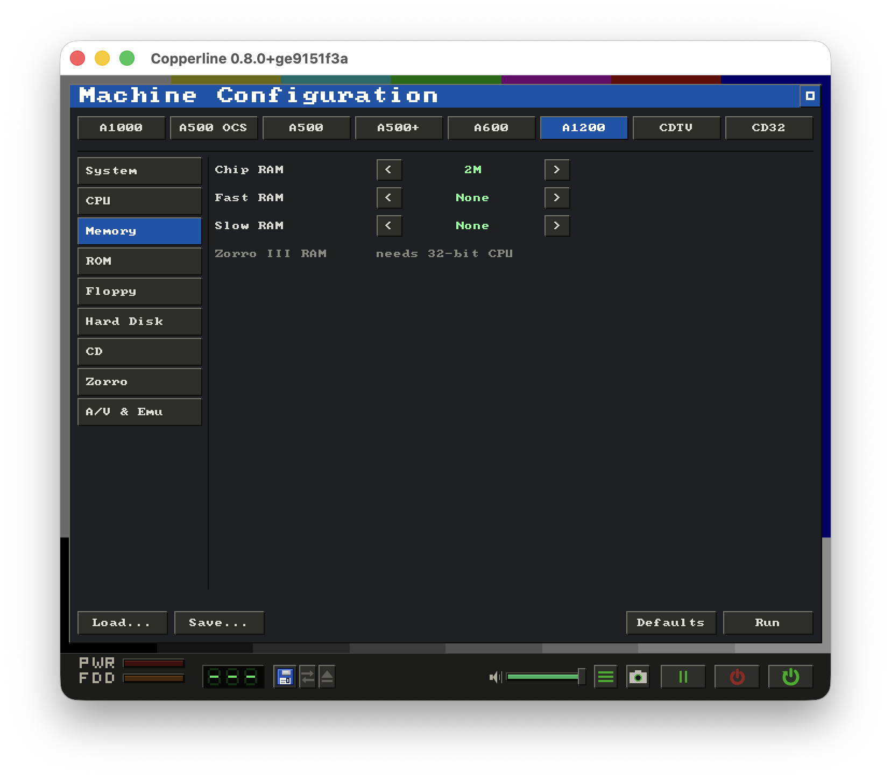
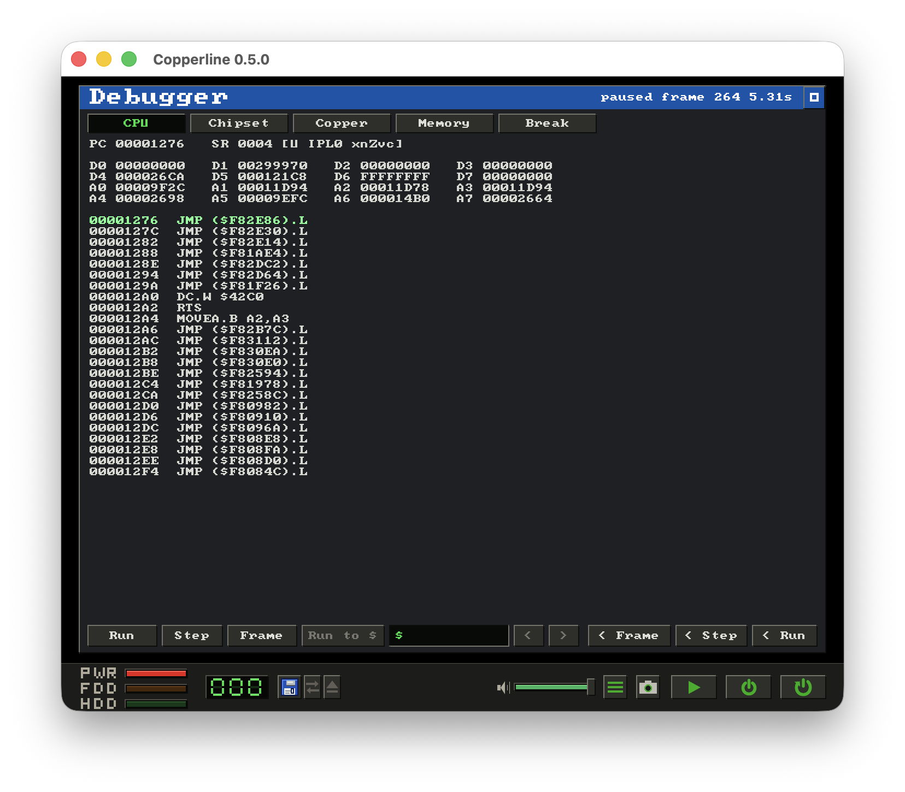
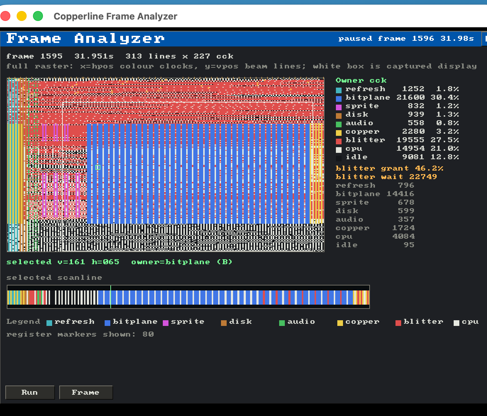

Cycle-driven chip bus
The chip bus is arbitrated per colour clock between refresh, display, sprite, disk and audio DMA, the Copper, the blitter and the CPU - with hardware per-word bus sequences and modelled 68000 interrupt-recognition latency.
Cycle-driven · OCS / ECS / AGA · written in Rust
Cycle-driven means the whole machine advances on one colour-clock timeline - CPU, DMA, Copper, blitter, all of it. Built around that core: a debugger that steps backwards, a chip-bus frame analyzer, and byte-identical record and replay.
The 68000, Agnus, Denise, Paula, the CIAs and the floppy, all scheduled against a single colour-clock timeline. 68000 cycle counts are validated against the TomHarte SingleStepTests, and chip-bus timing against a test disk cross-checked on real hardware and the vAmigaTS suite.
The chip bus is arbitrated per colour clock between refresh, display, sprite, disk and audio DMA, the Copper, the blitter and the CPU - with hardware per-word bus sequences and modelled 68000 interrupt-recognition latency.
Independent Agnus / Denise revisions and machine profiles spanning the A1000, A500 / A500+ and A1200, plus CDTV and CD32. Boots the bundled AROS ROM out of the box - no Kickstart needed - as well as Kickstart 1.3 / 2.05 / 3.1 and DiagROM, and runs the timing-sensitive regression set at real speed.
Selectable 68000 / 68EC020 / 68020 / 68030 / 68040 and clock, accurate 68000 cycle counts, optional on-chip caches, and an 80-bit 68881 / 68882 FPU (default-on for the 040) with pure-Rust softfloat transcendentals and packed-decimal reals.
A bit-timed keyboard (6500/1 MCU), mouse, USB gamepad (pure-Rust gilrs, no SDL2), and 4-channel Paula audio with the LED filter.
Up to four floppies (ADF / ADZ / DMS / SCP) with multi-disk swap playlists, Gayle IDE and an A2091 SCSI board carrying up to seven drives, CDTV and CD32 CD-ROM, Zorro II / III autoconfig, and a host folder mounted as a bootable hard disk.
Functional Zorro boards sit behind a clean device boundary, so external WASM plugin boards can add deterministic read / write / tick / interrupt behaviour, with optional DMA, file resources and networking. A built-in Commodore A2065 Ethernet board (Am7990 LANCE) ships with a loopback backend.
8 bitplanes, a 256-entry 25-bit palette, HAM8, FMODE wide fetch, dual playfield, EHB, sprites and hardware collisions - replayed by beam position so the renderer never races the chipset.
Optional phosphor persistence, a motion-adaptive deinterlacer for laced screens, and tv / full overscan. The woven field is presented at a TV-like 4:3, the way the hardware drove a real monitor.
An in-window debugger that steps backwards, a chip-bus frame analyzer, deterministic save states, input recording / replay, and headless screenshot & frame-dump capture. Every replay is byte-identical.
Real captures from the emulator window - chrome, status bar and all. Save a still to PNG, or record the screen to a lossless AVI - both locked to the emulated clock, so even a warp-speed capture plays back at the right speed.


Launch Copperline with no options and it opens a full machine-configuration launcher - also reachable from the menu. Pick a base profile, tweak it, then Run - no hand-written TOML required to get going.

Edit the machine profile, chipset, CPU, memory, ROM, floppy, hard disk, CD, Zorro boards, audio / video and emulation behaviour through a graphical front-end - including settings declared by external plugin boards.
It reads and writes the same TOML schema as a hand-edited config, so Load, Save, Run and Defaults round-trip cleanly with the config files you already keep.
Press Cmd+B to pause and open the in-window debugger: a live 68000 disassembly, the custom-chip state decoded bit by bit, the Copper list, a hex dump, and breakpoints / watchpoints. Then step the machine backwards.

The recurring hard question in a corruption bug is "the value at address X is wrong by the time I look - which instruction wrote it?". Stop at the symptom, then walk backwards to the culprit.
Because the core is deterministic and already snapshots the whole machine, going
back in time needs no special record layer the way a tool like rr
does. The emulator keeps a ring of in-memory snapshots; to reach an earlier
point it restores the nearest one and replays forward - byte-identical.
There is also a headless "last writer" reverse watchpoint for automated root-cause hunts. See the reverse-debugging guide.
Pause the machine and open the chip-bus frame analyzer. It paints one captured frame as the full raster - x is hpos in colour clocks, y is the beam line - with every cycle coloured by the bus master that owned it.

Refresh, bitplane, sprite, disk and audio DMA, the Copper, the blitter and the CPU all compete for one chip bus. The analyzer tallies who won every slot across the frame, so a dropped line or a blit that starves the CPU is visible directly.
It breaks out blitter grant against wait - the cycles the blitter held the bus versus the cycles it stalled behind higher-priority DMA - and you can click any cycle to read back its line, hpos and owner.
// chip-bus owners, one frame
The core is deterministic and independent of the host: a windowless, unthrottled run produces the same emulated result as a real-time windowed one, given the same inputs and media. That determinism is what makes captures reproducible, and it is also what lets the debugger step backwards.
--model, --cpu, --chip and friends - no
config file required..clscript and replay it byte-for-byte - a bug report that always
reproduces.--load-state brings a
machine snapshot back even when the original Kickstart isn't on hand - the
save state carries the whole machine.# boot a disk, tap space, wait, grab a screenshot - no window
copperline game.adf --noaudio \
--press-after 4 SPACE \
--screenshot-after 12 shot.png
# record a whole session, then replay it byte-identically
copperline game.adf --record-input run.clscript
copperline game.adf --script run.clscript --audio-wav run.wavFrom the 68000 prefetch queue to Paula's audio mixer - the timing model is documented next to the code and backed by named regression tests.
A vendored pure-Rust m68k core drives the CPU, with 68000 cycle counts validated against the TomHarte SingleStepTests to within about a percent. A bootable timing-test disk cross-checks chip-bus timing against real hardware and other emulators, and the vAmigaTS suite runs as a compatibility regression. The detailed architecture and timing model live in the internals docs.
Grab the latest release, or build from source with a stable Rust toolchain. Developed and tested on macOS, with a universal macOS .dmg, a Linux AppImage and a Windows build available. Every build ships the open-source AROS boot ROM, so it runs out of the box with no Kickstart required.
Download the latest release# open Copperline-0.9.0-macos-universal.dmg and drag
# Copperline.app into your Applications folder, then launch it
# the build is not notarized, so macOS blocks the first launch.
# approve it once under System Settings > Privacy & Security
# (click "Open Anyway"), and it launches normally from then on# tap the repository and install the latest release
brew tap LinuxJedi/copperline https://github.com/LinuxJedi/Copperline
brew install copperline
# or build the latest development version from main
brew install --HEAD copperline# grab the .AppImage from the latest release, then make it executable
chmod +x Copperline-0.9.0-x86_64.AppImage
# run it - the bundled AROS ROM means no Kickstart is required
./Copperline-0.9.0-x86_64.AppImage
# or boot your own Kickstart ROM, or a config file
./Copperline-0.9.0-x86_64.AppImage path/to/kickstart.rom
./Copperline-0.9.0-x86_64.AppImage --config copperline.toml# with Homebrew on Linux, tap the repository and install
brew tap LinuxJedi/copperline https://github.com/LinuxJedi/Copperline
brew install copperline
# or build the latest development version from main
brew install --HEAD copperline# download and extract Copperline-0.9.0-win-x64.zip, then from a terminal
# with no ROM it boots the bundled AROS Kickstart replacement
copperline.exe
copperline.exe path\to\kickstart.rom
copperline.exe --config copperline.toml# clone and build (release - debug is too slow for real-time)
git clone https://github.com/LinuxJedi/Copperline.git
cd Copperline
cargo build --release
# run it - with no ROM it boots the bundled AROS Kickstart replacement
./target/release/copperline
# or boot your own Kickstart ROM, or a config file
./target/release/copperline path/to/kickstart.rom
./target/release/copperline --config copperline.tomlRequires Rust 1.87+ (stable). No SDL2 dependency.